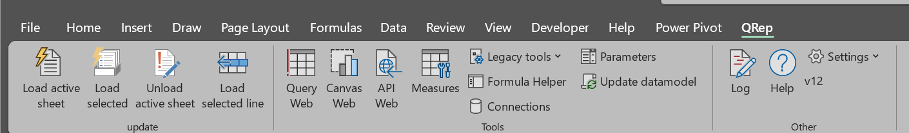

QRep Ribbon
The QRep tab is the main Excel entry point for loading reports and opening QReports tools.

Update group
| Button | What it does |
|---|---|
| Load active sheet | Unloads generated report data, reruns QReports blocks on the active sheet, restores protection, and refreshes Canvas shapes. |
| Unload active sheet | Removes generated output so the underlying xlquery instructions can be edited. |
| Load selected | Opens the sheet-selection dialog and loads selected report sheets. |
| Load selected line | Runs only the report block belonging to the selected line/cell. |
Use Load active sheet for a normal report refresh and Load selected line while developing one block in a large sheet.
Tools group
| Button | What it does |
|---|---|
| Query Tool | Opens Query Tool using the definition at the active cell and carries existing measures into the editor. |
| Qanvas Tool | Opens QReports Canvas hosted from the active workbook. This is a Premium/Pro licensed feature. |
| API tool | Opens API Explorer. This is a Pro licensed feature. |
| Formula Helper | Shows or hides the right-side reference and code-generation pane for QRep Excel Code. |
| Connections | Opens Connection Manager for database, table, model, and API definitions. |
| Parameters | Opens Parameter Input for user-enabled parameters stored on _control. |
| Update datamodel | Calls Excel's workbook-wide Refresh All. |
Other group
| Button | What it does |
|---|---|
| Log | Opens the in-memory QReports log. Right-click to clear, copy, save, or select text. |
| Help | Opens this documentation site in the default browser. |
| Settings | Opens administration and support commands. |
The Settings menu contains:
- AI Prompt Helper: builds a copyable prompt using current Excel and QReports context;
- Automation (VBA): shows example VBA and the add-in ProgID;
- Manual install company settings: copies a selected company profile into local company settings;
- Enter License: stores a license key for the current Windows user;
- License Status: shows customer, edition, expiry, features, and license path;
- About: shows version, environment, installation, and diagnostic path information.
Shape context menu
Right-clicking a supported Excel shape, picture, or drawing object adds Open in Qanvas tool. Use it for workbooks containing QReports Canvas content.
Licensing
Connections remain available for configuration, while Query Tool, Qanvas, and API functionality can be enabled or disabled by license features. License Status is the quickest way to inspect the current entitlement.
Continue to QRep Excel Code, Query Tool, Parameters, or Technical information.